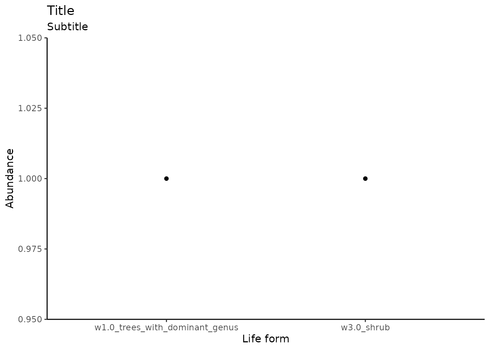
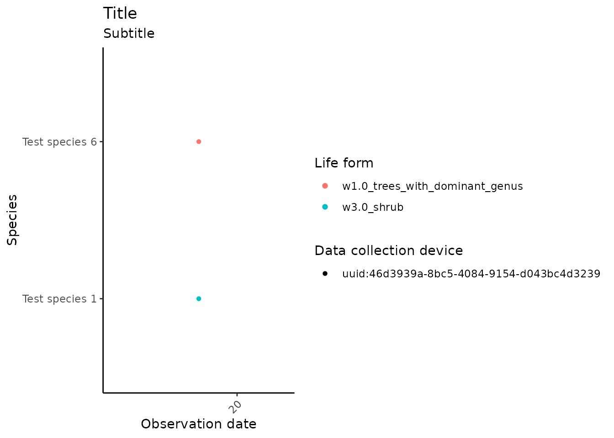

# This vignette requires the following packages:
library(DT)
library(leaflet)
# library(listviewer)
library(magrittr)
library(tibble)
library(tidyr)
#>
#> Attaching package: 'tidyr'
#> The following object is masked from 'package:magrittr':
#>
#> extract
library(lubridate)
#>
#> Attaching package: 'lubridate'
#> The following objects are masked from 'package:base':
#>
#> date, intersect, setdiff, union
library(knitr)
library(dplyr)
#>
#> Attaching package: 'dplyr'
#> The following objects are masked from 'package:stats':
#>
#> filter, lag
#> The following objects are masked from 'package:base':
#>
#> intersect, setdiff, setequal, union
library(ggplot2)
library(ruODK)This vignette demonstrates ruODK’s workflow to extract data from ODK Central’s OData service endpoint, and to prepare the data and the media attachments for further analysis and visualisation.
The demonstrated workflow is roughly equivalent to ODK Central’s “Export all data”, which downloads all submissions and all repeating subgroups as CSV spreadsheets, and all media attachments in a local subfolder “attachments”.
An alternative pathway to getting data out of ODK Central is to use the REST API as documented (with live examples in multiple programming languages) at the ODK Central API docs.
Configure ruODK
The OData service URL is shown in the form’s “Submissions” tab > “Analyse via OData” on ODK Central. It contains base URL, project ID, and form ID and is used by ruODK::ru_setup().
# ODK Central's OData URL contains base URL, project ID, and form ID
# ODK Central credentials can live in .Renviron
# See vignette("setup") for setup and authentication options.
ruODK::ru_setup(
svc = Sys.getenv("ODKC_TEST_SVC"),
un = Sys.getenv("ODKC_TEST_UN"),
pw = Sys.getenv("ODKC_TEST_PW"),
tz = "Australia/Perth",
verbose = TRUE
)
# File attachment download location
loc <- fs::path("media")This vignette shows how to access data, but under the bonnet uses the included package data. This allows to rebuild the vignette offline and without credentials to the originating ODK Central server.
# Canned data
data("fq_svc")
data("fq_form_schema")
data("fq_meta")
data("fq_raw")
data("fq_raw_strata")
data("fq_raw_taxa")
data("fq_data")
data("fq_data_strata")
data("fq_data_taxa")To extract data from the OData API endpoints, we have to:
- discover data endpoints from the OData service document,
- inspect the metadata schema to infer data types,
- download submissions from the data endpoints,
- download media attachments and adjust their file paths to the downloaded files.
OData service document
Let’s start off with the service document.
fq_svc <- ruODK::odata_service_get()The same data is included as example data fq_svc.
| name | kind | url |
|---|---|---|
| Submissions | EntitySet | Submissions |
| Submissions.vegetation_stratum | EntitySet | Submissions.vegetation_stratum |
| Submissions.taxon_encounter | EntitySet | Submissions.taxon_encounter |
ruODK provides the names and urls of the service endpoints as tibble. We see the main data available under the url Submissions, and repeating form groups called taxon_encounter and vegetation_stratum in the ODK form under the url Submissions.taxon_encounter and Submissions.vegetation_stratum, respectively.
The main value we get out of the service document are these names of the form groups, which can differ between forms.
OData metadata document
Let’s inspect the form metadata to review our data schema. While we can download the submission data without it, the metadata document contains information about field data types and attachment names.
fq_meta <- ruODK::odata_metadata_get()
if (requireNamespace("listviewer")) {
listviewer::jsonedit(fq_meta)
} else {
ru_msg_info("Please install package listviewer!")
}
#> Loading required namespace: listviewerAs an alternative to the OData metadata document, ODK Central also offers form metadata as a much cleaner JSON document, which ruODK can read and parse into a clean tibble of field type, name, and path.
ruODK uses this introspection to parse submission data.
fq_form_schema <- ruODK::form_schema()| path | name | type | binary | selectMultiple | ruodk_name |
|---|---|---|---|---|---|
| /meta | meta | structure | NA | NA | meta |
| /meta/instanceID | instanceID | string | NA | NA | meta_instance_id |
| /encounter_start_datetime | encounter_start_datetime | dateTime | NA | NA | encounter_start_datetime |
| /reporter | reporter | string | NA | NA | reporter |
| /device_id | device_id | string | NA | NA | device_id |
| /location | location | structure | NA | NA | location |
| /location/area_name | area_name | string | NA | NA | location_area_name |
| /location/quadrat_photo | quadrat_photo | binary | TRUE | NA | location_quadrat_photo |
| /location/corner1 | corner1 | geopoint | NA | NA | location_corner1 |
| /habitat | habitat | structure | NA | NA | habitat |
| /habitat/morphological_type | morphological_type | select1 | NA | NA | habitat_morphological_type |
| /habitat/morphological_type_photo | morphological_type_photo | binary | TRUE | NA | habitat_morphological_type_photo |
| /vegetation_stratum | vegetation_stratum | repeat | NA | NA | vegetation_stratum |
| /vegetation_stratum/nvis_level3_broad_floristic_group | nvis_level3_broad_floristic_group | select1 | NA | NA | vegetation_stratum_nvis_level3_broad_floristic_group |
| /vegetation_stratum/max_height_m | max_height_m | decimal | NA | NA | vegetation_stratum_max_height_m |
| /vegetation_stratum/foliage_cover | foliage_cover | select1 | NA | NA | vegetation_stratum_foliage_cover |
| /vegetation_stratum/dominant_species_1 | dominant_species_1 | string | NA | NA | vegetation_stratum_dominant_species_1 |
| /vegetation_stratum/dominant_species_2 | dominant_species_2 | string | NA | NA | vegetation_stratum_dominant_species_2 |
| /vegetation_stratum/dominant_species_3 | dominant_species_3 | string | NA | NA | vegetation_stratum_dominant_species_3 |
| /vegetation_stratum/dominant_species_4 | dominant_species_4 | string | NA | NA | vegetation_stratum_dominant_species_4 |
| /perimeter | perimeter | structure | NA | NA | perimeter |
| /perimeter/corner2 | corner2 | geopoint | NA | NA | perimeter_corner2 |
| /perimeter/corner3 | corner3 | geopoint | NA | NA | perimeter_corner3 |
| /perimeter/corner4 | corner4 | geopoint | NA | NA | perimeter_corner4 |
| /perimeter/mudmap_photo | mudmap_photo | binary | TRUE | NA | perimeter_mudmap_photo |
| /taxon_encounter | taxon_encounter | repeat | NA | NA | taxon_encounter |
| /taxon_encounter/field_name | field_name | string | NA | NA | taxon_encounter_field_name |
| /taxon_encounter/photo_in_situ | photo_in_situ | binary | TRUE | NA | taxon_encounter_photo_in_situ |
| /taxon_encounter/taxon_encounter_location | taxon_encounter_location | geopoint | NA | NA | taxon_encounter_taxon_encounter_location |
| /taxon_encounter/life_form | life_form | select1 | NA | NA | taxon_encounter_life_form |
| /taxon_encounter/voucher_specimen_barcode | voucher_specimen_barcode | barcode | NA | NA | taxon_encounter_voucher_specimen_barcode |
| /taxon_encounter/voucher_specimen_label | voucher_specimen_label | string | NA | NA | taxon_encounter_voucher_specimen_label |
| /encounter_end_datetime | encounter_end_datetime | dateTime | NA | NA | encounter_end_datetime |
OData submission data documents
Now let’s download the form submissions and, separately, repeating form groups. ruODK::odata_submission_get() defaults to download the submission data, parse it into a tidy tibble, parses dates and datetimes, downloads and links file attachments, and handles spatial datatypes.
This vignette is built with canned data, so the verbose messages are not shown.
With wkt=TRUE, we’ll receive spatial types as Well Known Text, which ruODK parses as plain text. With wkt=FALSE (the default), we’ll receive spatial types as GeoJSON, which ruODK parses into a nested list. ruODK retains the original spatial field, and annotates the data with extracted longitude, latitude, altitude, and (where given) accuracy. These additional fields are prefixed with the original field name to prevent name collisions between possibly multiple location fields.
fq_data <- ruODK::odata_submission_get(
table = fq_svc$name[1],
local_dir = loc,
wkt = TRUE
)
fq_data_strata <- ruODK::odata_submission_get(
table = fq_svc$name[2],
local_dir = loc
)
fq_data_taxa <- ruODK::odata_submission_get(
table = fq_svc$name[3],
local_dir = loc,
wkt = TRUE
)Detour: Data rectangling
The function ruODK::odata_submission_get() received the original XML response as a nested list of lists. To analyse and visualise the data, this nested list of lists must be transformed into a rectangular shape. The function ruODK::odata_submission_rectangle() is used internally to recursively un-nest list columns using tidyr::unnest_wider(). Unnamed columns, notably the anonymous lat/lon/alt coordinates, are named automatically to become unique (a feature of tidyr::unnest_*()), and then sanitised using the helper janitor::clean_names().
By default, form group names are used as prefix to the field names. This behaviour can be disabled by handing the argument names_sep=NULL to tidyr::unnest_wider() through running ruODK::odata_submission_get() %>% ruODK::odata_submission_rectangle(names_sep = NULL).
The vectorised function ruODK::attachment_get() is then used internally to download and link attachments like photos and other media to a local, relative path. This will take some time during the first run. Once the files exist locally, the download will be skipped.
When used through ruODK::odata_submission_get(), ruODK will introspect the form schema to detect and then parse media attachment fields automatically. When used manually, field names of media attachment fields can be (partially or fully) specified, see ??ruODK::attachment_get().
The date formats are parsed from ISO8601 timestamps into POSIXct objects with ruODK::handle_ru_datetimes(). We use our local timezone (GMT+08) in this example. ruODK introspects the form schema to detect and then parse date and datetime fields automatically.
The repeated subgroup taxon_encounter is left joined to the main submission data to receive a (repeated) copy of the main submission data (such as location, time and habitat description). We will do the same to the other repeated subgroup vegetation_stratum.
For clarity, we enable verbose messages from ruODK::odata_submission_get() and preserve the message output in the code chunk options with message=TRUE. In real-world use cases, messages can be disabled through the chunk option message=FALSE.
We use a custom local path for attachments (loc). This results in a smaller installed package size for ruODK, as it shares the attachment files with the other vignettes. The default is a local folder media.
The raw and unparsed example data is provided as data objects fq_raw (main submissions of form Flora Quadrat 0.4), fq_raw_taxa (repeated group “Taxon Encounter” within a Flora Quadrat), and fq_raw_strata (repeated group “Vegetation Stratum” within a Flora Quadrat).
The parsed versions are included as data objects fq_data, fq_data_strata, and fq_data_taxa. To enable users without ODK Central credentials to build this vignette (e.g. on package installation with build_vignettes=TRUE), we show the real functions (such as ruODK::odata_submission_get()), but do not evaluate them. Instead, we use “canned data”. The ruODK test suite ensures that canned data are equivalent to live data.
The result of this code chunk should be exactly the same as the compact version with odata_submission_get(parse=TRUE).
# Candidates for ruODK::handle_ru_datetimes()
fq_form_schema %>%
dplyr::filter(type %in% c("dateTime", "date")) %>%
knitr::kable(.)| path | name | type | binary | selectMultiple | ruodk_name |
|---|---|---|---|---|---|
| /encounter_start_datetime | encounter_start_datetime | dateTime | NA | NA | encounter_start_datetime |
| /encounter_end_datetime | encounter_end_datetime | dateTime | NA | NA | encounter_end_datetime |
# Candidates for ruODK::handle_ru_attachments()
fq_form_schema %>%
dplyr::filter(type == "binary") %>%
knitr::kable(.)| path | name | type | binary | selectMultiple | ruodk_name |
|---|---|---|---|---|---|
| /location/quadrat_photo | quadrat_photo | binary | TRUE | NA | location_quadrat_photo |
| /habitat/morphological_type_photo | morphological_type_photo | binary | TRUE | NA | habitat_morphological_type_photo |
| /perimeter/mudmap_photo | mudmap_photo | binary | TRUE | NA | perimeter_mudmap_photo |
| /taxon_encounter/photo_in_situ | photo_in_situ | binary | TRUE | NA | taxon_encounter_photo_in_situ |
# Candidates for ruODK::handle_ru_geopoints()
fq_form_schema %>%
dplyr::filter(type == "geopoint") %>%
knitr::kable(.)| path | name | type | binary | selectMultiple | ruodk_name |
|---|---|---|---|---|---|
| /location/corner1 | corner1 | geopoint | NA | NA | location_corner1 |
| /perimeter/corner2 | corner2 | geopoint | NA | NA | perimeter_corner2 |
| /perimeter/corner3 | corner3 | geopoint | NA | NA | perimeter_corner3 |
| /perimeter/corner4 | corner4 | geopoint | NA | NA | perimeter_corner4 |
| /taxon_encounter/taxon_encounter_location | taxon_encounter_location | geopoint | NA | NA | taxon_encounter_taxon_encounter_location |
# The raw submission data
fq_raw <- ruODK::odata_submission_get(table = fq_svc$name[1], parse = FALSE)
fq_strata <- ruODK::odata_submission_get(table = fq_svc$name[2], parse = FALSE)
fq_taxa <- ruODK::odata_submission_get(table = fq_svc$name[3], parse = FALSE)
# Parse main data
fq_data <- fq_raw %>%
ruODK::odata_submission_rectangle() %>%
ruODK::handle_ru_datetimes(fq_form_schema) %>%
ruODK::handle_ru_geopoints(fq_form_schema) %>%
ruODK::handle_ru_geotraces(fq_form_schema) %>%
ruODK::handle_ru_geoshapes(fq_form_schema) %>%
ruODK::handle_ru_attachments(fq_form_schema, local_dir = t)
# Parse nested group "taxa"
fq_data_taxa <- fq_taxa %>%
ruODK::odata_submission_rectangle() %>%
ruODK::handle_ru_datetimes(fq_form_schema) %>%
ruODK::handle_ru_geopoints(fq_form_schema) %>%
ruODK::handle_ru_geotraces(fq_form_schema) %>%
ruODK::handle_ru_geoshapes(fq_form_schema) %>%
ruODK::handle_ru_attachments(fq_form_schema, local_dir = t) %>%
dplyr::left_join(fq_data, by = c("submissions_id" = "id"))
# Parse nested group "strata"
fq_data_strata <- fq_strata %>%
ruODK::odata_submission_rectangle() %>%
ruODK::handle_ru_datetimes(fq_form_schema) %>%
ruODK::handle_ru_geopoints(fq_form_schema) %>%
ruODK::handle_ru_geotraces(fq_form_schema) %>%
ruODK::handle_ru_geoshapes(fq_form_schema) %>%
ruODK::handle_ru_attachments(fq_form_schema, local_dir = t) %>%
dplyr::left_join(fq_data, by = c("submissions_id" = "id"))Note: A manually resized version of the original photos in this example live in the package source under articles/media. To minimise package size, they were resized with imagemagick:
find vignettes/media -type f -exec mogrify -resize 200x150 {} \\;DIY rectangling
For those wishing to go one step further, this section demonstrates the inner workings of ruODK, the recursive use of tidyr::unnest_wider().
The unnesting could also be done manually by building up a pipeline, which stepwise unnests each list column. This requires knowledge of the data structure, which can either be looked up from the metadata, or by inspecting the raw data, fq_raw.
The following command has been built by stepwise adding tidyr::unnest_wider() expressions to the pipe until all list columns were eliminated.
The trailing invisible() allows us to toggle parts of the pipe by catching the dangling %>%.
fq_data_diy <- tibble::tibble(value = fq_raw$value) %>%
tidyr::unnest_wider(value) %>%
# 1. find list columns:
tidyr::unnest_wider(`__system`) %>%
tidyr::unnest_wider(meta) %>%
# add more lines here to unnest other form groups
#
# 2. rename column names
dplyr::rename(
uuid = `__id`
# add more columns, e.g.
# longitude=`...1`, latitude=`...2`, altitude=`...3`
) %>%
# 3. handle media attachments
# dplyr::mutate(photo_1 = attachment_get(data_url, uuid, photo_1)) %>%
invisible()Visualise data
This section provides some examples of standard data visualisations.
Datatable
The package DT provides an interactive (and searchable) datatable.
DT::datatable(fq_data)
DT::datatable(fq_data_taxa)
DT::datatable(fq_data_strata)
# DT::datatable(head(fq_data_diy))Map
The R package leaflet provides interactive maps.
Constructing label and popup requires knowledge of the dataset structure.
leaflet::leaflet(width = 800, height = 600) %>%
leaflet::addProviderTiles("OpenStreetMap.Mapnik", group = "Place names") %>%
leaflet::addProviderTiles("Esri.WorldImagery", group = "Aerial") %>%
leaflet::clearBounds() %>%
leaflet::addAwesomeMarkers(
data = fq_data,
lng = ~location_corner1_longitude,
lat = ~location_corner1_latitude,
icon = leaflet::makeAwesomeIcon(text = "Q", markerColor = "red"),
label = ~ glue::glue("{location_area_name} {encounter_start_datetime}"),
popup = ~ glue::glue(
"<h3>{location_area_name}</h3>",
"Survey start {encounter_start_datetime}</br>",
"Device {device_id}</br>",
"<h5>Site</h5>",
'<div><img src="{location_quadrat_photo}"',
' height="150px" alt="Quadrat photo"></img></div>',
"<h5>Mudmap</h5>",
'<div><img src="{perimeter_mudmap_photo}',
' height="150px" alt="Mudmap"></img></div>',
"<h5>Habitat</h5>",
"Morphological type: {habitat_morphological_type}</br>",
'<div><img src="{habitat_morphological_type_photo}"',
'height="150px" alt="Morphological type"></img></div>'
),
clusterOptions = leaflet::markerClusterOptions()
) %>%
leaflet::addLayersControl(
baseGroups = c("Place names", "Aerial"),
options = leaflet::layersControlOptions(collapsed = FALSE)
)
leaflet::leaflet(width = 800, height = 600) %>%
leaflet::addProviderTiles("OpenStreetMap.Mapnik", group = "Place names") %>%
leaflet::addProviderTiles("Esri.WorldImagery", group = "Aerial") %>%
leaflet::clearBounds() %>%
leaflet::addAwesomeMarkers(
data = fq_data_taxa,
lng = ~location_corner1_longitude,
lat = ~location_corner1_latitude,
icon = leaflet::makeAwesomeIcon(text = "T", markerColor = "green"),
label = ~ glue::glue("{field_name} {encounter_start_datetime}"),
popup = ~ glue::glue(
"<h3>{field_name}</h3>",
"Survey start {encounter_start_datetime}</br>",
"Device {device_id}</br>",
"<h5>Taxon</h5>",
'<div><img src="media/{photo_in_situ}"',
' height="150px" alt="Taxon in situ"></img></div>',
"Specimen barcode: {voucher_specimen_barcode}</br>",
"Life form: {life_form}</br>"
),
clusterOptions = leaflet::markerClusterOptions()
) %>%
leaflet::addLayersControl(
baseGroups = c("Place names", "Aerial"),
options = leaflet::layersControlOptions(collapsed = FALSE)
)Summarising data
See Hadley Wickam’s R for Data Science for more ideas on data exploration.
# How many submissions per device?
fq_data %>%
dplyr::group_by(meta_instance_id) %>%
dplyr::tally() %>%
knitr::kable()| meta_instance_id | n |
|---|---|
| uuid:46d3939a-8bc5-4084-9154-d043bc4d3239 | 1 |
# How many species sightings per life form?
fq_data_taxa %>%
dplyr::group_by(life_form) %>%
dplyr::tally() %>%
knitr::kable()| life_form | n |
|---|---|
| w1.0_trees_with_dominant_genus | 1 |
| w3.0_shrub | 1 |
# GGplot of a pivot table
fq_data_taxa %>%
dplyr::group_by(life_form) %>%
dplyr::tally() %>%
ggplot2::ggplot(ggplot2::aes(x = life_form, y = n)) +
ggplot2::labs(
title = "Title",
subtitle = "Subtitle",
x = "Life form",
y = "Abundance"
) +
ggplot2::geom_point() +
ggplot2::theme_classic()
# GGplot with groups
fq_data_taxa %>%
ggplot2::ggplot(
ggplot2::aes(
x = encounter_start_datetime,
y = field_name,
colour = life_form,
shape = meta_instance_id
)
) +
ggplot2::labs(
title = "Title",
subtitle = "Subtitle",
x = "Observation date",
y = "Species",
colour = "Life form",
shape = "Data collection device"
) +
ggplot2::geom_point() +
ggplot2::theme_classic() +
ggplot2::theme(axis.text.x = element_text(angle = 45, hjust = 1))
Export
The rectangled data can now be exported. e.g. to CSV. Note that all list columns must be either unnested or dropped before exporting to CSV.
ruReady to ODK?
In this vignette, we took a scenic tour through the general workflow of accessing and wrangling ODK Central data using ruODK.
For your convenience, ruODK includes a template RMarkdown workbook with the essential steps of the above workflow and colour-by-numbers instructions, which can be used as a starting point for projects using data from ODK Central.
To create a new RMarkdown document from the ruODK template, run rmarkdown::draft("test.Rmd", "odata", package="ruODK").
Users of RStudio can alternatively “Create a new RMarkdown document” “From template” and select ruODK’s template “ODK Central via OData”.
Make sure to install a fresh version of ruODK to get the latest and greatest template.